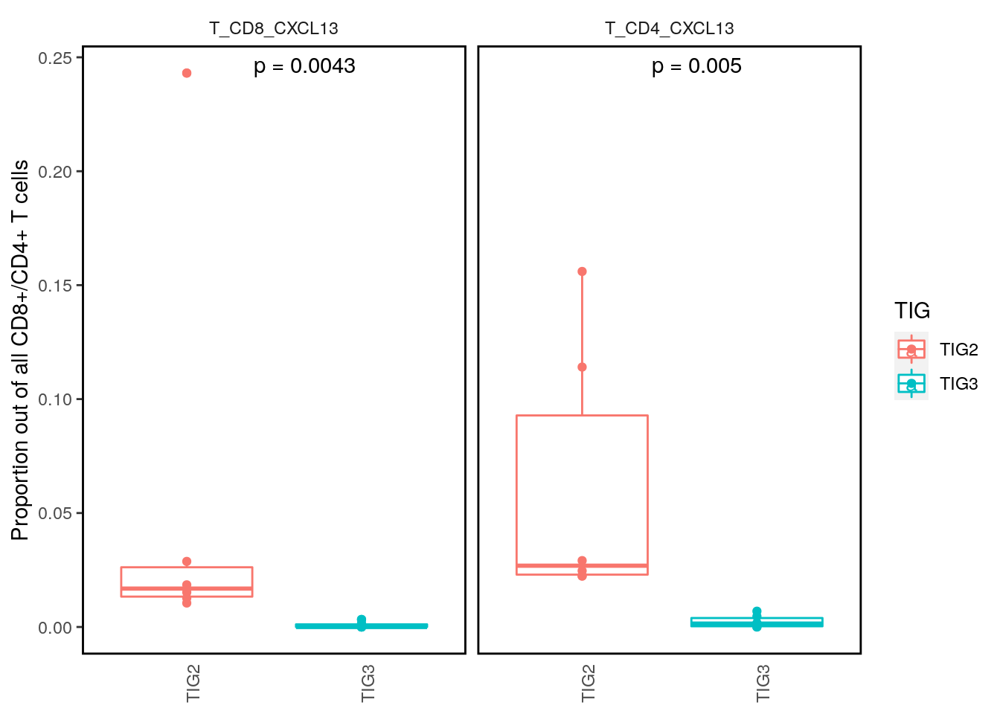
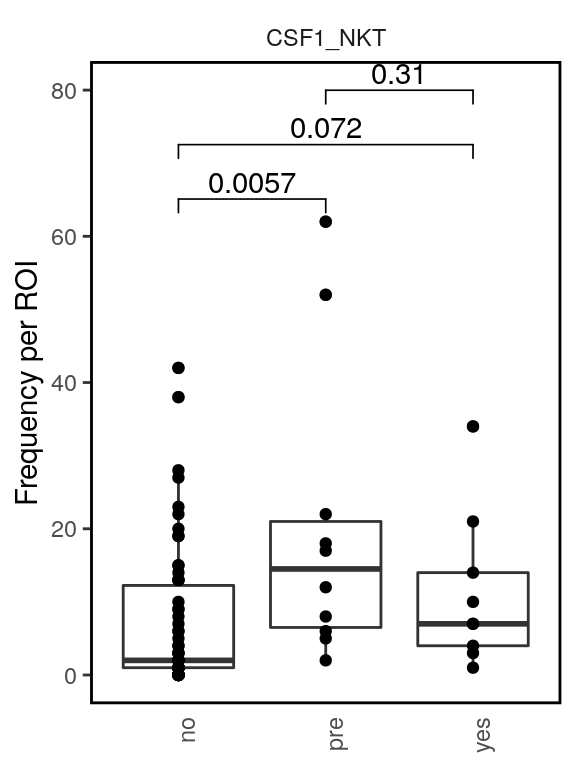
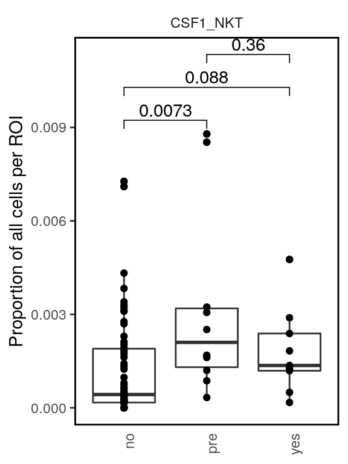
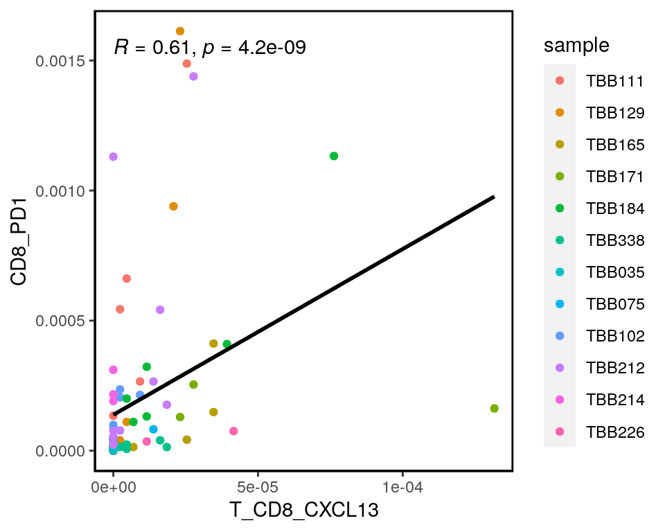

10_RNApanel_TNK_cytokines
SandraTietscher
2020-10-30
Last updated: 2020-11-06
Checks: 7 0
Knit directory: BCexh_IMC/
This reproducible R Markdown analysis was created with workflowr (version 1.6.2). The Checks tab describes the reproducibility checks that were applied when the results were created. The Past versions tab lists the development history.
Great! Since the R Markdown file has been committed to the Git repository, you know the exact version of the code that produced these results.
Great job! The global environment was empty. Objects defined in the global environment can affect the analysis in your R Markdown file in unknown ways. For reproduciblity it’s best to always run the code in an empty environment.
The command set.seed(12345) was run prior to running the code in the R Markdown file. Setting a seed ensures that any results that rely on randomness, e.g. subsampling or permutations, are reproducible.
Great job! Recording the operating system, R version, and package versions is critical for reproducibility.
Nice! There were no cached chunks for this analysis, so you can be confident that you successfully produced the results during this run.
Great job! Using relative paths to the files within your workflowr project makes it easier to run your code on other machines.
Great! You are using Git for version control. Tracking code development and connecting the code version to the results is critical for reproducibility.
The results in this page were generated with repository version d0e1504. See the Past versions tab to see a history of the changes made to the R Markdown and HTML files.
Note that you need to be careful to ensure that all relevant files for the analysis have been committed to Git prior to generating the results (you can use wflow_publish or wflow_git_commit). workflowr only checks the R Markdown file, but you know if there are other scripts or data files that it depends on. Below is the status of the Git repository when the results were generated:
Ignored files:
Ignored: analysis/.Rhistory
Untracked files:
Untracked: analysis/11_RNAscope_cytokine_communities.Rmd
Untracked: analysis/XX_RNApanel_neighbourhood.Rmd
Untracked: code/helper_functions/
Untracked: data/Ki67_IHC.csv
Untracked: data/ProteinPanel_TNK_clusters.csv
Untracked: data/ProteinPanel_stromal_clusters.csv
Untracked: data/ProteinPanel_tumor_stroma_clusters.csv
Untracked: data/RNApanel_TNK_clusters.csv
Untracked: data/RNApanel_stromal_clusters.csv
Untracked: data/RNApanel_tumor_stroma_clusters.csv
Untracked: data/RNAseq_Tcells.rds
Untracked: data/RNAseq_celltype_prop.csv
Untracked: data/RNAseq_epithelial.rds
Untracked: data/ROI_info_HIER.csv
Untracked: data/ROI_info_HIER_TLSrevised.csv
Untracked: data/ROI_info_RNAscope.csv
Untracked: data/ROI_info_RNAscope_TLSrevised.csv
Untracked: data/TLS_scores.csv
Untracked: data/cpout/
Untracked: data/cytof_celltype_prop.csv
Untracked: data/masks/
Untracked: output/ProteinPanel/
Untracked: output/RNApanel/
Untracked: output/TLS_score_25samples.png
Untracked: output/sce_ProteinPanel_afterQC.rds
Untracked: output/sce_ProteinPanel_initial.rds
Untracked: output/sce_ProteinPanel_initial_TLSrevised.rds
Untracked: output/sce_RNApanel_afterQC.rds
Untracked: output/sce_RNApanel_initial.rds
Untracked: output/sce_RNApanel_initial_TLSrevised.rds
Unstaged changes:
Modified: analysis/05_proteinPanel_StromalSubclustering.Rmd
Modified: analysis/06_proteinPanel_tumor_analysis.Rmd
Modified: analysis/07_proteinPanel_TNK_analysis.Rmd
Note that any generated files, e.g. HTML, png, CSS, etc., are not included in this status report because it is ok for generated content to have uncommitted changes.
These are the previous versions of the repository in which changes were made to the R Markdown (analysis/10_RNApanel_TNK_cytokines.Rmd) and HTML (docs/10_RNApanel_TNK_cytokines.html) files. If you’ve configured a remote Git repository (see ?wflow_git_remote), click on the hyperlinks in the table below to view the files as they were in that past version.
| File | Version | Author | Date | Message |
|---|---|---|---|---|
| Rmd | d0e1504 | SandraTietscher | 2020-11-06 | Small plot changes |
| html | cc3a5bc | SandraTietscher | 2020-11-02 | Build site. |
| Rmd | 99f5fe8 | SandraTietscher | 2020-11-02 | Update TLS information |
| html | 6e7b8f2 | SandraTietscher | 2020-10-30 | Build site. |
| Rmd | bf85a5c | SandraTietscher | 2020-10-30 | Add TIG colors to CSF1-myeloid plots |
| html | f7a400a | SandraTietscher | 2020-10-30 | Build site. |
| Rmd | 7b6a9f7 | SandraTietscher | 2020-10-30 | Add script for detailed analysis of CXCL13+ T cells and CSF1+ T/NK cells |
Introduction
This script defines CXCL13-expressing T cells and CSF1-expressing T/NK cells and looks into them in more detail.
Load libraries and data
library(SingleCellExperiment)
library(dplyr)
library(ggplot2)
library(scater)
library(tidyr)
library(ggpubr)
library(dittoSeq)
library(Seurat)
sce_RNA <- readRDS(file = "output/RNApanel/sce_RNApanel_celltypes_cytokines.rds")
TIG2 <- c("TBB111", "TBB129", "TBB165", "TBB171", "TBB184", "TBB338")Assign new subtypes to CXCL13-expressing CD4 and CD8 T cells
sce_RNA$subtype <- sce_RNA$celltype
sce_RNA$subtype <- ifelse(sce_RNA$celltype == "T_CD4" & sce_RNA$CXCL13_mRNA_expression == 1, "T_CD4_CXCL13", sce_RNA$subtype)
sce_RNA$subtype <- ifelse(sce_RNA$celltype == "T_CD8" & sce_RNA$CXCL13_mRNA_expression == 1, "T_CD8_CXCL13", sce_RNA$subtype)CXCL13+ T cell proportions
Across TLS states
sce_CD8 <- sce_RNA[,which(sce_RNA$celltype == "T_CD8")]
sce_CD4 <- sce_RNA[,which(sce_RNA$celltype == "T_CD4")]
# Boxplots (individual ROIs as points)
tab_CD8 <- as.data.frame(prop.table(table(sce_CD8$ImageNumber, sce_CD8$subtype), margin = 1)) %>% filter(Var2 == "T_CD8_CXCL13")
frequency <- as.data.frame(table(sce_CD8$ImageNumber, sce_CD8$CXCL13_mRNA_expression)) %>% filter(Var2 == 1)
tab_CD8$frequency <- frequency[,3]
tab_CD4 <- as.data.frame(prop.table(table(sce_CD4$ImageNumber, sce_CD4$subtype), margin = 1)) %>% filter(Var2 == "T_CD4_CXCL13")
frequency <- as.data.frame(table(sce_CD4$ImageNumber, sce_CD4$CXCL13_mRNA_expression)) %>% filter(Var2 == 1)
tab_CD4$frequency <- frequency[,3]
tab_comb <- rbind(tab_CD8, tab_CD4)
colnames(tab_comb) <- c("ImageNumber", "subtype", "proportion", "frequency")
tab <- as.data.frame(table(sce_CD8$ImageNumber, sce_CD8$TLS))
colnames(tab) <- c("ImageNumber", "TLS", "cellnumber_image")
tab <- tab %>% filter(cellnumber_image > 0)
tab$cellnumber_image <- NULL
tab_comb2 <- merge(tab_comb, tab, by = "ImageNumber")
my_comparisons <- list( c("no", "pre"), c("no", "yes"), c("pre", "yes") )
ggplot(tab_comb2, aes(TLS, frequency))+
geom_boxplot()+
geom_point()+
stat_compare_means(comparisons = my_comparisons, label = "p.format", method = "wilcox")+
facet_wrap(~subtype, scales = "fixed")+
theme(axis.ticks.x = element_blank(),
axis.text.x=element_text(angle = 90, hjust=1),
axis.title.x = element_blank(),
panel.background = element_blank(),
panel.border = element_rect(color = "black", fill = NA, size = 1),
strip.background = element_blank(),
legend.background = element_blank())+
ylab("Frequency per ROI")
ggplot(tab_comb2, aes(TLS, proportion))+
geom_boxplot()+
geom_point()+
stat_compare_means(comparisons = my_comparisons, label = "p.format", method = "wilcox")+
facet_wrap(~subtype, scales = "fixed")+
theme(axis.ticks.x = element_blank(),
axis.text.x=element_text(angle = 90, hjust=1),
axis.title.x = element_blank(),
panel.background = element_blank(),
panel.border = element_rect(color = "black", fill = NA, size = 1),
strip.background = element_blank(),
legend.background = element_blank())+
ylab("Proportion of all CD8+/CD4+ T cells per ROI")
Across samples/TIGs (for non-TLS only)
sce_CD8_TLSex <- sce_CD8[,which(sce_CD8$TLS == "no")]
sce_CD4_TLSex <- sce_CD4[,which(sce_CD4$TLS == "no")]
# Boxplots (individual ROIs as points)
tab_CD8 <- as.data.frame(prop.table(table(sce_CD8_TLSex$sample, sce_CD8_TLSex$subtype), margin = 1)) %>% filter(Var2 == "T_CD8_CXCL13")
frequency <- as.data.frame(table(sce_CD8_TLSex$sample, sce_CD8_TLSex$subtype)) %>% filter(Var2 == "T_CD8_CXCL13")
tab_CD8$frequency <- frequency[,3]
tab_CD4 <- as.data.frame(prop.table(table(sce_CD4_TLSex$sample, sce_CD4_TLSex$subtype), margin = 1)) %>% filter(Var2 == "T_CD4_CXCL13")
frequency <- as.data.frame(table(sce_CD4_TLSex$sample, sce_CD4_TLSex$subtype)) %>% filter(Var2 == "T_CD4_CXCL13")
tab_CD4$frequency <- frequency[,3]
tab_comb <- rbind(tab_CD8, tab_CD4)
colnames(tab_comb) <- c("sample", "subtype", "proportion", "frequency")
tab_comb$TIG <- ifelse(tab_comb$sample %in% TIG2, "TIG2", "TIG3")
ggplot(tab_comb, aes(TIG, proportion, color = TIG))+
geom_boxplot()+
geom_point()+
stat_compare_means(label = "p.format", method = "wilcox", label.x.npc = "middle")+
facet_wrap(~subtype, scales = "fixed")+
theme(axis.ticks.x = element_blank(),
axis.text.x=element_text(angle = 90, hjust=1),
axis.title.x = element_blank(),
panel.background = element_blank(),
panel.border = element_rect(color = "black", fill = NA, size = 1),
strip.background = element_blank(),
legend.background = element_blank())+
ylab("Proportion out of all CD8+/CD4+ T cells")
Compare CXCL13 protein status to CXCL13 mRNA status
sce_T <- sce_RNA[,which(sce_RNA$celltype %in% c("T_CD8", "T_CD4"))]
CXCL13_exp <- data.frame(mRNA = as.factor(sce_T$CXCL13_mRNA_expression),
protein = assay(sce_T, "counts")["CXCL13_protein",])
ggplot(CXCL13_exp, aes(x=mRNA, y = protein))+
#geom_violin(width=1, fill = "black")+
#geom_boxplot()+
geom_violin()+
stat_compare_means(label = "p.format", method = "wilcox", label.x.npc = "middle")+
theme(panel.border = element_rect(color = "black", fill = NA, size = 1),
panel.background = element_blank())+
xlab("CXCL13 mRNA expression")+
ylab("CXCL13 protein counts")
Check Ki-67 status
Ki-67 expression cutoff was chosen at 0.3 mean counts per cell.
# For CD8+ CXCL13+ T cells
Ki67_exprs <- as.data.frame(assay(sce_CD8, "counts")["Ki-67",])
colnames(Ki67_exprs) <- "Ki67_exprs"
Ki67_exprs$Ki67_status <- ifelse(Ki67_exprs$Ki67_exprs > 0.3, "positive", "negative")
tab <- cbind(Ki67_exprs, colData(sce_CD8))
tab$CXCL13_status <- ifelse(tab$CXCL13_mRNA_expression == 1, "positive", "negative")
# For CD4+ CXCL13+ T cells
Ki67_exprs_CD4 <- as.data.frame(assay(sce_CD4, "counts")["Ki-67",])
colnames(Ki67_exprs_CD4) <- "Ki67_exprs"
Ki67_exprs_CD4$Ki67_status <- ifelse(Ki67_exprs_CD4$Ki67_exprs > 0.3, "positive", "negative")
tab_CD4 <- cbind(Ki67_exprs_CD4, colData(sce_CD4))
tab_CD4$CXCL13_status <- ifelse(tab_CD4$CXCL13_mRNA_expression == 1, "positive", "negative")
tab_comb <- rbind(tab, tab_CD4)
ggplot(tab_comb, aes(x = CXCL13_status, fill = Ki67_status))+
geom_bar(position="fill")+
scale_fill_manual(values = c("black", "deepskyblue1"))+
facet_wrap(~celltype)+
theme(axis.line.x = element_line(colour = "black", size = 0.25),
axis.line.y = element_line(colour = "black", size = 0.25),
panel.grid.major = element_blank(),
panel.grid.minor = element_blank(),
panel.border = element_blank(),
panel.background = element_blank())+
ylab("Proportion [%]")
| Version | Author | Date |
|---|---|---|
| cc3a5bc | SandraTietscher | 2020-11-02 |
Assign CSF1+ NKT cell subtype
All CSF1-positive T and NK cells (except CXCL13+) will be classified as NKT cells. This is only an approximation, but as close as we can get to defining this cell type.
sce_RNA$subtype <- ifelse(sce_RNA$subtype %in% c("NK", "T_CD8", "T_CD4") & sce_RNA$CSF1_expression == 1, "CSF1_NKT", sce_RNA$subtype)Check CSF1_NKT proportions/frequency (out of all cells)
Across TLS states
tab <- as.data.frame(prop.table(table(sce_RNA$ImageNumber, sce_RNA$subtype), margin = 1)) %>% filter(Var2 == "CSF1_NKT")
frequency <- as.data.frame(table(sce_RNA$ImageNumber, sce_RNA$subtype)) %>% filter(Var2 == "CSF1_NKT")
tab$frequency <- frequency[,3]
colnames(tab) <- c("ImageNumber", "subtype", "proportion", "frequency")
tab2 <- as.data.frame(table(sce_RNA$ImageNumber, sce_RNA$TLS))
colnames(tab2) <- c("ImageNumber", "TLS", "cellnumber_image")
tab2 <- tab2 %>% filter(cellnumber_image > 0)
tab2$cellnumber_image <- NULL
tab_comb <- merge(tab2, tab, by = "ImageNumber")
my_comparisons <- list( c("no", "pre"), c("no", "yes"), c("pre", "yes") )
ggplot(tab_comb, aes(TLS, frequency))+
geom_boxplot()+
geom_point()+
stat_compare_means(comparisons = my_comparisons, label = "p.format", method = "wilcox")+
facet_wrap(~subtype, scales = "fixed")+
theme(axis.ticks.x = element_blank(),
axis.text.x=element_text(angle = 90, hjust=1),
axis.title.x = element_blank(),
panel.background = element_blank(),
panel.border = element_rect(color = "black", fill = NA, size = 1),
strip.background = element_blank(),
legend.background = element_blank())+
ylab("Frequency per ROI")
ggplot(tab_comb, aes(TLS, proportion))+
geom_boxplot()+
geom_point()+
stat_compare_means(comparisons = my_comparisons, label = "p.format", method = "wilcox")+
facet_wrap(~subtype, scales = "fixed")+
theme(axis.ticks.x = element_blank(),
axis.text.x=element_text(angle = 90, hjust=1),
axis.title.x = element_blank(),
panel.background = element_blank(),
panel.border = element_rect(color = "black", fill = NA, size = 1),
strip.background = element_blank(),
legend.background = element_blank())+
ylab("Proportion of all cells per ROI")
Across samples/TIGs
For non-TLS images only.
sce_TLSex <- sce_RNA[,which(sce_RNA$TLS == "no")]
# Boxplots (individual ROIs as points)
tab <- as.data.frame(prop.table(table(sce_TLSex$sample, sce_TLSex$subtype), margin = 1)) %>% filter(Var2 == "CSF1_NKT")
frequency <- as.data.frame(table(sce_TLSex$sample, sce_TLSex$subtype)) %>% filter(Var2 == "CSF1_NKT")
tab$frequency <- frequency[,3]
colnames(tab) <- c("sample", "subtype", "proportion", "frequency")
tab$TIG <- ifelse(tab$sample %in% TIG2, "TIG2", "TIG3")
ggplot(tab, aes(TIG, proportion, color = TIG))+
geom_boxplot()+
geom_point()+
stat_compare_means(label = "p.format", method = "wilcox", label.x.npc = "middle")+
facet_wrap(~subtype, scales = "fixed")+
theme(axis.ticks.x = element_blank(),
axis.text.x=element_text(angle = 90, hjust=1),
axis.title.x = element_blank(),
panel.background = element_blank(),
panel.border = element_rect(color = "black", fill = NA, size = 1),
strip.background = element_blank(),
legend.background = element_blank())+
ylab("Proportion out of all cells")
Compare to 10x proportions
Exclude TLS and pre-TLS
Compare CSF1_NKT proportions (out of all T/NK cells)
# Read in Seurat object and calculate NKT proportions per sample
Tcells_10x <- readRDS("data/RNAseq_Tcells.rds")
prop <- as.data.frame(prop.table(table(Tcells_10x$orig.ident, Tcells_10x$metacluster), margin = 1))
colnames(prop) <- c("sample", "metacluster", "RNAseq_proportion")
prop <- prop[prop$metacluster == "NKT",]
# Remove samples that were not measured by IMC
not.measured <- c("TBB011", "TBB330")
prop <- prop[!(prop$sample %in% not.measured),]
# Retrieve IMC proportions (of all T/NK cells)
sce_TNK <- sce_RNA[, which(sce_RNA$celltype %in% c("NK", "T_CD4", "T_CD8"))]
IMC_prop <- as.data.frame(prop.table(table(sce_TNK$sample, sce_TNK$subtype), margin = 1)) %>% filter(Var2 == "CSF1_NKT")
colnames(IMC_prop) <- c("sample", "subtype", "IMC_proportion")
# Merge
prop.comb <- merge(IMC_prop, prop, by = "sample")
prop.comb$TIG <- ifelse(prop.comb$sample %in% TIG2, "TIG2", "TIG3")
# Test correlation
ggplot(prop.comb, aes(IMC_proportion, RNAseq_proportion)) +
geom_point(aes(color=TIG))+
geom_smooth(method = lm, color = "black", se=FALSE)+
stat_cor(method="spearman")+
theme(axis.line.x = element_line(colour = "black", size = 0.25),
axis.line.y = element_line(colour = "black", size = 0.25),
panel.grid.major = element_blank(),
panel.grid.minor = element_blank(),
panel.border = element_rect(colour = "black", fill=NA, size=1),
panel.background = element_blank())+
ggtitle("CSF1_NKT proportion out of all T/NK cells - method comparison")`geom_smooth()` using formula 'y ~ x'
| Version | Author | Date |
|---|---|---|
| f7a400a | SandraTietscher | 2020-10-30 |
Compare CD4_CXCL13 proportions (out of all T/NK cells)
# Read in Seurat object and calculate NKT proportions per sample
prop <- as.data.frame(prop.table(table(Tcells_10x$orig.ident, Tcells_10x$metacluster), margin = 1))
colnames(prop) <- c("sample", "metacluster", "RNAseq_proportion")
prop <- prop[prop$metacluster == "CD4_exhausted",]
# Remove samples that were not measured by IMC
not.measured <- c("TBB011", "TBB330")
prop <- prop[!(prop$sample %in% not.measured),]
# Retrieve IMC proportions (of all T/NK cells)
sce_TNK <- sce_RNA[, which(sce_RNA$celltype %in% c("NK", "T_CD4", "T_CD8"))]
IMC_prop <- as.data.frame(prop.table(table(sce_TNK$sample, sce_TNK$subtype), margin = 1)) %>% filter(Var2 == "T_CD4_CXCL13")
colnames(IMC_prop) <- c("sample", "subtype", "IMC_proportion")
# Merge
prop.comb <- merge(IMC_prop, prop, by = "sample")
prop.comb$TIG <- ifelse(prop.comb$sample %in% TIG2, "TIG2", "TIG3")
# Test correlation
ggplot(prop.comb, aes(IMC_proportion, RNAseq_proportion)) +
geom_point(aes(color=TIG))+
geom_smooth(method = lm, color = "black", se=FALSE)+
stat_cor(method="spearman")+
theme(axis.line.x = element_line(colour = "black", size = 0.25),
axis.line.y = element_line(colour = "black", size = 0.25),
panel.grid.major = element_blank(),
panel.grid.minor = element_blank(),
panel.border = element_rect(colour = "black", fill=NA, size=1),
panel.background = element_blank())+
ggtitle("CD4_CXCL13+ proportion out of all T/NK cells - method comparison")`geom_smooth()` using formula 'y ~ x'
| Version | Author | Date |
|---|---|---|
| f7a400a | SandraTietscher | 2020-10-30 |
Compare CD8_CXCL13 proportions (out of all T/NK cells)
# Read in Seurat object and calculate NKT proportions per sample
prop <- as.data.frame(prop.table(table(Tcells_10x$orig.ident, Tcells_10x$metacluster), margin = 1))
colnames(prop) <- c("sample", "metacluster", "RNAseq_proportion")
prop <- prop[prop$metacluster == "CD8_exhausted",]
# Remove samples that were not measured by IMC
not.measured <- c("TBB011", "TBB330")
prop <- prop[!(prop$sample %in% not.measured),]
# Retrieve IMC proportions (of all T/NK cells)
sce_TNK <- sce_RNA[, which(sce_RNA$celltype %in% c("NK", "T_CD4", "T_CD8"))]
IMC_prop <- as.data.frame(prop.table(table(sce_TNK$sample, sce_TNK$subtype), margin = 1)) %>% filter(Var2 == "T_CD8_CXCL13")
colnames(IMC_prop) <- c("sample", "subtype", "IMC_proportion")
# Merge
prop.comb <- merge(IMC_prop, prop, by = "sample")
prop.comb$TIG <- ifelse(prop.comb$sample %in% TIG2, "TIG2", "TIG3")
# Test correlation
ggplot(prop.comb, aes(IMC_proportion, RNAseq_proportion)) +
geom_point(aes(color=TIG))+
geom_smooth(method = lm, color = "black", se=FALSE)+
stat_cor(method="spearman")+
theme(axis.line.x = element_line(colour = "black", size = 0.25),
axis.line.y = element_line(colour = "black", size = 0.25),
panel.grid.major = element_blank(),
panel.grid.minor = element_blank(),
panel.border = element_rect(colour = "black", fill=NA, size=1),
panel.background = element_blank())+
ggtitle("CD8_CXCL13+ proportion out of all T/NK cells - method comparison")`geom_smooth()` using formula 'y ~ x'
| Version | Author | Date |
|---|---|---|
| f7a400a | SandraTietscher | 2020-10-30 |
Check correlation of CSF1_NKT cells with myeloid activation/differentiation status (across ROIs)
Use the cytokine-expression status as a proxy for cell activation
sce_myeloid <- sce_RNA[,which(sce_RNA$celltype == "myeloid")]
cytokine_myeloid <- prop.table(table(sce_myeloid$ImageNumber, sce_myeloid$cytokine), margin = 1)[,2]
CSF1_freq <- as.data.frame(table(sce_RNA$ImageNumber, sce_RNA$subtype)) %>% filter(Var2 == "CSF1_NKT")
colnames(CSF1_freq) <- c("ImageNumber", "subtype", "CSF1_NKT frequency")
CSF1_freq$myeloid_activation <- cytokine_myeloid
img_TIG <- as.data.frame(table(sce_myeloid$ImageNumber, sce_myeloid$TIG)) %>% filter(Freq > 0)
colnames(img_TIG) <- c("ImageNumber", "TIG", "cellnumber")
CSF1_freq <- merge(CSF1_freq, img_TIG, by = "ImageNumber")
ggplot(CSF1_freq, aes(`CSF1_NKT frequency`, myeloid_activation)) +
geom_point(aes(color = TIG))+
geom_smooth(method = lm, color = "black", se=FALSE)+
stat_cor(method="spearman")+
theme(axis.line.x = element_line(colour = "black", size = 0.25),
axis.line.y = element_line(colour = "black", size = 0.25),
panel.grid.major = element_blank(),
panel.grid.minor = element_blank(),
panel.border = element_rect(colour = "black", fill=NA, size=1),
panel.background = element_blank())+
ylab("Proportion of myeloid cells that express at least one cytokine")`geom_smooth()` using formula 'y ~ x'
Use the expression of CD68, CD163, CD204 and CCL18 as a proxy for cell activation
# Re-normalize counts
norm_counts <- t(apply(assay(sce_myeloid, "counts"), 1, function(x)(x-min(x))/(quantile(x, 0.99)-min(x))))
norm_counts <- t(apply(norm_counts, 1, function(x) pmin(x, 1)))
assay(sce_myeloid, "normalized", withDimnames = FALSE) <- norm_counts
# For each cells, average across the normalized counts for CD68, CD163, CD204 and CCL18
count_matrix <- assay(sce_myeloid, "normalized")[c("CD68", "CD163", "CD204", "CCL18"),]
sce_myeloid$activation_score <- colMeans(count_matrix)
activation_score_mean <- aggregateAcrossCells(sce_myeloid, sce_myeloid$ImageNumber, coldata_merge = list(activation_score = mean))$activation_score
CSF1_freq <- as.data.frame(table(sce_RNA$ImageNumber, sce_RNA$subtype)) %>% filter(Var2 == "CSF1_NKT")
colnames(CSF1_freq) <- c("ImageNumber", "subtype", "CSF1_NKT frequency")
CSF1_freq$myeloid_activation <- activation_score_mean
CSF1_freq <- merge(CSF1_freq, img_TIG, by = "ImageNumber")
ggplot(CSF1_freq, aes(`CSF1_NKT frequency`, myeloid_activation)) +
geom_point(aes(color=TIG))+
geom_smooth(method = lm, color = "black", se=FALSE)+
stat_cor(method="spearman")+
theme(axis.line.x = element_line(colour = "black", size = 0.25),
axis.line.y = element_line(colour = "black", size = 0.25),
panel.grid.major = element_blank(),
panel.grid.minor = element_blank(),
panel.border = element_rect(colour = "black", fill=NA, size=1),
panel.background = element_blank())+
ylab("Mean activation score for myeloid cells")`geom_smooth()` using formula 'y ~ x'
Save updated SCE object
saveRDS(sce_RNA, "output/RNApanel/sce_RNApanel_cytokines_subtypes.rds")Compare proportions of CXCL13+ T cells to PD1+ T cells from HIER panel
sce_protein <- readRDS("output/ProteinPanel/sce_ProteinPanel_subtypes_all.rds")
# Proportion out of ALL cells
prop.CXCL13 <- prop.table(table(sce_RNA$ImageNumber, sce_RNA$subtype))[,c("T_CD4_CXCL13", "T_CD8_CXCL13")]
prop.PD1 <- prop.table(table(sce_protein$ImageNumber, sce_protein$subtype))[,c("CD4_PD1", "CD8_PD1")]
prop <- cbind(prop.CXCL13, prop.PD1)
# Add ROI info
ROI_info <- read.csv("data/ROI_info_RNAscope.csv")
prop <- cbind(prop, ROI_info)
# CD4+ T cells
ggplot(prop, aes(T_CD4_CXCL13, CD4_PD1)) +
geom_point(aes(color=sample))+
geom_smooth(method = lm, color = "black", se=FALSE)+
stat_cor(method="spearman")+
theme(axis.line.x = element_line(colour = "black", size = 0.25),
axis.line.y = element_line(colour = "black", size = 0.25),
panel.grid.major = element_blank(),
panel.grid.minor = element_blank(),
panel.border = element_rect(colour = "black", fill=NA, size=1),
panel.background = element_blank())`geom_smooth()` using formula 'y ~ x'# CD8+ T cells
ggplot(prop, aes(T_CD8_CXCL13, CD8_PD1)) +
geom_point(aes(color=sample))+
geom_smooth(method = lm, color = "black", se=FALSE)+
stat_cor(method="spearman")+
theme(axis.line.x = element_line(colour = "black", size = 0.25),
axis.line.y = element_line(colour = "black", size = 0.25),
panel.grid.major = element_blank(),
panel.grid.minor = element_blank(),
panel.border = element_rect(colour = "black", fill=NA, size=1),
panel.background = element_blank())`geom_smooth()` using formula 'y ~ x'
sessionInfo()R version 4.0.2 (2020-06-22)
Platform: x86_64-pc-linux-gnu (64-bit)
Running under: Ubuntu 20.04 LTS
Matrix products: default
BLAS/LAPACK: /usr/lib/x86_64-linux-gnu/openblas-openmp/libopenblasp-r0.3.8.so
locale:
[1] LC_CTYPE=en_US.UTF-8 LC_NUMERIC=C
[3] LC_TIME=en_US.UTF-8 LC_COLLATE=en_US.UTF-8
[5] LC_MONETARY=en_US.UTF-8 LC_MESSAGES=C
[7] LC_PAPER=en_US.UTF-8 LC_NAME=C
[9] LC_ADDRESS=C LC_TELEPHONE=C
[11] LC_MEASUREMENT=en_US.UTF-8 LC_IDENTIFICATION=C
attached base packages:
[1] parallel stats4 stats graphics grDevices utils datasets
[8] methods base
other attached packages:
[1] Seurat_3.2.2 dittoSeq_1.0.2
[3] ggpubr_0.4.0 tidyr_1.1.1
[5] scater_1.16.2 ggplot2_3.3.2
[7] dplyr_1.0.1 SingleCellExperiment_1.10.1
[9] SummarizedExperiment_1.18.2 DelayedArray_0.14.1
[11] matrixStats_0.56.0 Biobase_2.48.0
[13] GenomicRanges_1.40.0 GenomeInfoDb_1.24.2
[15] IRanges_2.22.2 S4Vectors_0.26.1
[17] BiocGenerics_0.34.0 workflowr_1.6.2
loaded via a namespace (and not attached):
[1] readxl_1.3.1 backports_1.1.8
[3] plyr_1.8.6 igraph_1.2.5
[5] lazyeval_0.2.2 splines_4.0.2
[7] BiocParallel_1.22.0 listenv_0.8.0
[9] digest_0.6.25 htmltools_0.5.0
[11] viridis_0.5.1 magrittr_1.5
[13] tensor_1.5 cluster_2.1.0
[15] ROCR_1.0-11 openxlsx_4.1.5
[17] limma_3.44.3 globals_0.13.1
[19] colorspace_1.4-1 rappdirs_0.3.1
[21] ggrepel_0.8.2 haven_2.3.1
[23] xfun_0.16 crayon_1.3.4
[25] RCurl_1.98-1.2 jsonlite_1.7.0
[27] spatstat.data_1.4-3 spatstat_1.64-1
[29] survival_3.2-3 zoo_1.8-8
[31] glue_1.4.1 polyclip_1.10-0
[33] gtable_0.3.0 zlibbioc_1.34.0
[35] XVector_0.28.0 leiden_0.3.3
[37] car_3.0-8 BiocSingular_1.4.0
[39] future.apply_1.6.0 abind_1.4-5
[41] scales_1.1.1 pheatmap_1.0.12
[43] edgeR_3.30.3 rstatix_0.6.0
[45] miniUI_0.1.1.1 Rcpp_1.0.5
[47] viridisLite_0.3.0 xtable_1.8-4
[49] reticulate_1.17 foreign_0.8-80
[51] rsvd_1.0.3 htmlwidgets_1.5.1
[53] httr_1.4.2 RColorBrewer_1.1-2
[55] ellipsis_0.3.1 ica_1.0-2
[57] farver_2.0.3 pkgconfig_2.0.3
[59] uwot_0.1.8 deldir_0.1-29
[61] locfit_1.5-9.4 labeling_0.3
[63] reshape2_1.4.4 tidyselect_1.1.0
[65] rlang_0.4.7 later_1.1.0.1
[67] munsell_0.5.0 cellranger_1.1.0
[69] tools_4.0.2 generics_0.0.2
[71] broom_0.7.0 ggridges_0.5.2
[73] evaluate_0.14 stringr_1.4.0
[75] fastmap_1.0.1 goftest_1.2-2
[77] yaml_2.2.1 knitr_1.29
[79] fs_1.5.0 fitdistrplus_1.1-1
[81] zip_2.0.4 purrr_0.3.4
[83] RANN_2.6.1 nlme_3.1-148
[85] pbapply_1.4-3 future_1.19.1
[87] whisker_0.4 mime_0.9
[89] compiler_4.0.2 rstudioapi_0.11
[91] png_0.1-7 plotly_4.9.2.1
[93] beeswarm_0.2.3 curl_4.3
[95] ggsignif_0.6.0 spatstat.utils_1.17-0
[97] tibble_3.0.3 stringi_1.4.6
[99] forcats_0.5.0 lattice_0.20-41
[101] Matrix_1.2-18 vctrs_0.3.2
[103] pillar_1.4.6 lifecycle_0.2.0
[105] lmtest_0.9-37 RcppAnnoy_0.0.16
[107] BiocNeighbors_1.6.0 data.table_1.13.0
[109] cowplot_1.0.0 bitops_1.0-6
[111] irlba_2.3.3 httpuv_1.5.4
[113] patchwork_1.0.1 R6_2.4.1
[115] promises_1.1.1 KernSmooth_2.23-17
[117] gridExtra_2.3 rio_0.5.16
[119] vipor_0.4.5 codetools_0.2-16
[121] MASS_7.3-51.6 rprojroot_1.3-2
[123] withr_2.2.0 sctransform_0.3.1
[125] GenomeInfoDbData_1.2.3 mgcv_1.8-31
[127] hms_0.5.3 rpart_4.1-15
[129] grid_4.0.2 rmarkdown_2.3
[131] DelayedMatrixStats_1.10.1 carData_3.0-4
[133] Rtsne_0.15 git2r_0.27.1
[135] shiny_1.5.0 ggbeeswarm_0.6.0